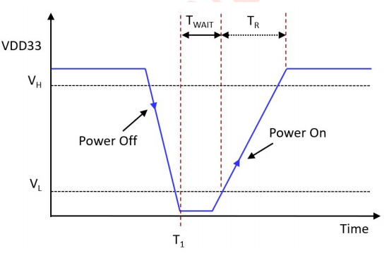

Electrical Characteristics and Design Boundaries
This page summarizes the most commonly used boundary values for schematic design, device selection, and laboratory verification. The parameters come from the “Turing Platform Instructions for Use”; before formal mass production, the data manual and hardware release package of the corresponding chip batch should be used as the final basis.
Power supply and charging
parameter |
minimum value |
Typical value |
maximum value |
illustrate |
|---|---|---|---|---|
VUSB |
4.6 V |
5.0 V |
5.5 V |
Charging and USB power input |
VBAT |
3.0 V |
3.7 V |
4.5 V |
battery input |
Charging current |
5 mA |
by configuration |
400 mA |
5 mA steps, limited by temperature rise and input margin |
The GPIO input voltage range is -0.3 V to VDDIO + 0.3 V. The default drive capacity of ordinary GPIO is 8 mA, and the port that can be configured with high drive is up to 32 mA; the internal pull-up/pull-down provides 0.3 kΩ, 10 kΩ, and 200 kΩ levels. The resistance value accuracy given in the manual is ±20%. PE0/PE1 high voltage IO is designed for 8 mA only.
Warning
The maximum drive capacity is not a recommended continuous operating point. Backlights, motors, speakers and high-current LEDs must use dedicated drivers, while accounting for the total chip current, ground reflow and thermal design.
Audio and RF Summary
The DAC supports sample rates from 8 kHz to 96 kHz; typical SNR 103 dB in single-ended mode and 107.5 dB in differential mode.
The audio ADC supports differential and single-ended inputs and has a typical SNR of approximately 97 to 98 dB. Actual performance is affected by front-end impedance, ground noise, and PCB layout.
The typical Bluetooth maximum transmit power is 10 dBm, and the typical 1M BLE receiving sensitivity is -98.5 dBm.
Optional Wi-Fi works in the 2.4 GHz frequency band, covering 2412 MHz to 2484 MHz; RF specifications should be retested under the complete antenna and regulatory conditions.
environment and protection
project |
index |
Reference conditions |
|---|---|---|
working temperature |
-40 ℃ to 85 ℃ |
Chip environment range |
Storage temperature |
-65 ℃ to 150 ℃ |
non-working status |
HBM ESD |
4 kV |
ANSI/ESDA/JEDEC JS-001-2017 |
CDM ESD |
800 V |
ANSI/ESDA/JEDEC JS-002-2022 |
Latch-up |
200 mA |
JEDEC JESD78F.01，105 ℃ |
These data are chip-level capabilities and cannot replace the TVS, current limiting, filtering, grounding and IEC immunity design of the entire machine port.
Power-on sequence
The input should remain below 200 mV for at least 400 ms before power-up and then rise to normal operating range within 500 ms. If the power supply slowly rises, drops repeatedly, or the peripheral reverse feeds power before the main power supply, the test should be covered during the prototype stage.

Board Level Verification Recommendations
Measure VBAT/VDDIO waveforms with maximum backlighting, wireless transmission, audio playback, and motor activation occurring simultaneously.
Check the power sequence during reset, cold boot, fast power cycle and USB plug and unplug.
Verify whether glitches occur during GPIO default state, pull-up and pull-down errors, and peripheral multiplexing switching.
Retest the radio frequency, audio noise floor, and system stability under conditions of temperature, low battery voltage, and parallel charging.